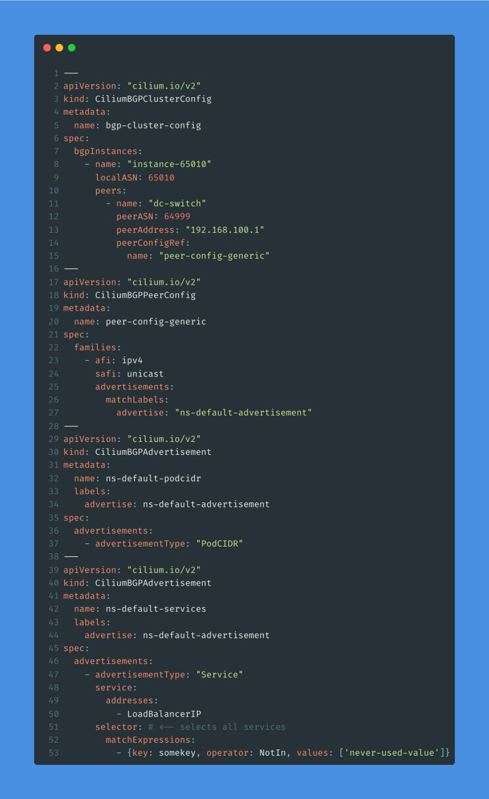

Cilium - It’s still just BGP…
Continuing on my Cilium journey, here is what the Cilium BGP config for my lab looks like at the moment.
Like (basically?) everything else in kubernetes, the BGP config is also specified in YAML. In my lab all of my BGP config exists in a single YAML file that contains multiple YAML documents, with each YAML document being separated by 3 dashes ---.

The first YAML document is of the kind CiliumBGPClusterConfig, and it should be mostly self-explanatory as long as you’ve worked with BGP on a ’traditional’ network device 🙂 I have a single BGP instance, called instance-65010, using the ASN 65010 with a single BGP peer with the name dc-switch with IP 192.168.100.1 in ASN 64999. The BGP peer config has a named reference to peer-config-generic, which references the next YAML document - Notice the name on line 15 🙂
This next YAML document is of the kind CiliumBGPPeerConfig and specifies our peer config, including the address-family (AFI) and subsequent AFI (SAFI) which in this case is unicast - In ‘Cisco BGP’ the SAFI could also be VPNv4, etc.. Lastly it has an advertisement block that will match ressources with the label-combination advertise: "ns-default-advertisement".
The last two YAML documents starting on line 28 and 38 are both of the kind CiliumBGPAdvertisement. If we look under their respective spec block, we can see they have a unique name (ns-default-podcidr and ns-default-service) and a labels block, where we can see we have added the label-combination advertise: ns-default-advertisement that we also specified in the CiliumBGPPeerConfig YAML document.
The first CiliumBGPAdvertisement will make Cilium advertise the PodCIDR assigned to each of our k8s nodes (more on this another time), based on the advertisementType: "PodCIDR".
The second one will advertise the IP address’ of any services that have been assigned a LoadBalancerIP (again more on this another time), and the last somewhat confusing part is the selector block on line 51-53, which as the comment says will simply match any services.
The result (luckily!) is that Cilium can now advertise services I deploy in the cluster to the rest of my homelab network using BGP - One of the two ways (at least as far as I know) to advertise services hosted in k8s.
And for the BGP config on my Cisco switch

And verifying that we are receiving the BGP routes from the k3s nodes
 The 10.42.x.0/24 routes are the
The 10.42.x.0/24 routes are the PodCIDR routes, each k3s node only advertises its own PodCIDR.
The 192.168.101.x/32 routes are the LoadBalancerIP Service routes, in my current setup each k3s node will advertise all services routes.